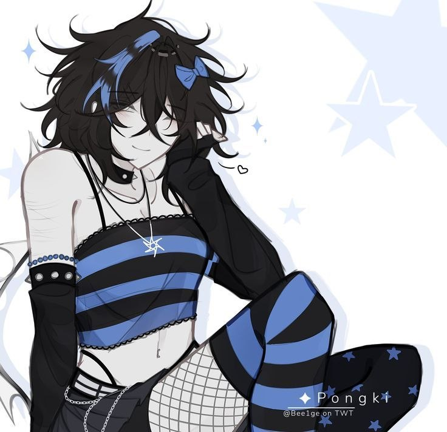
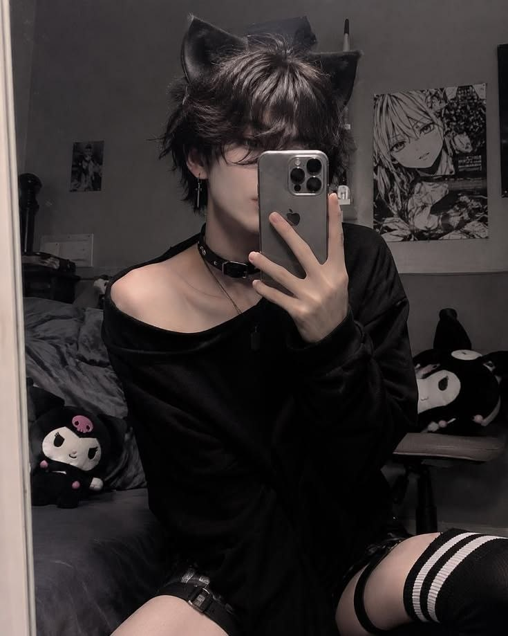
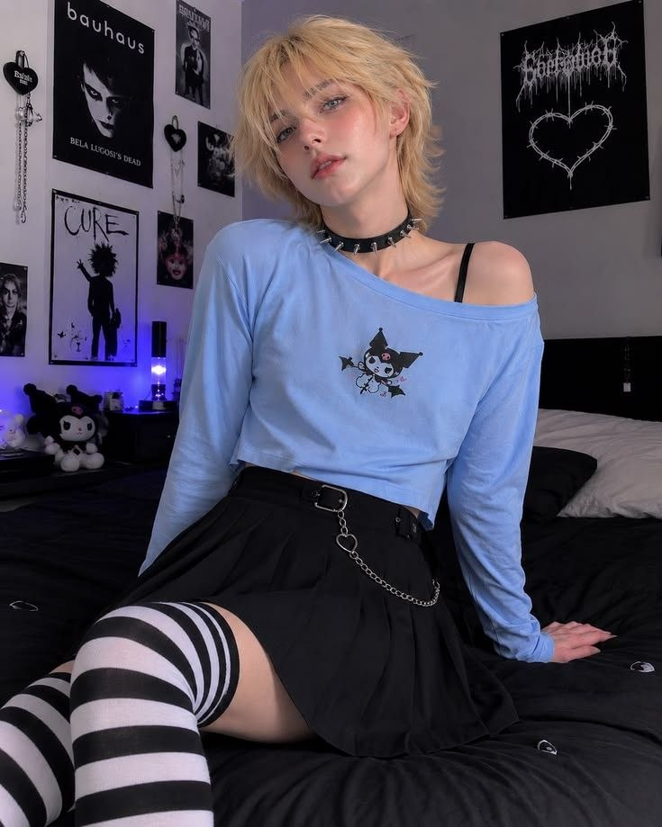
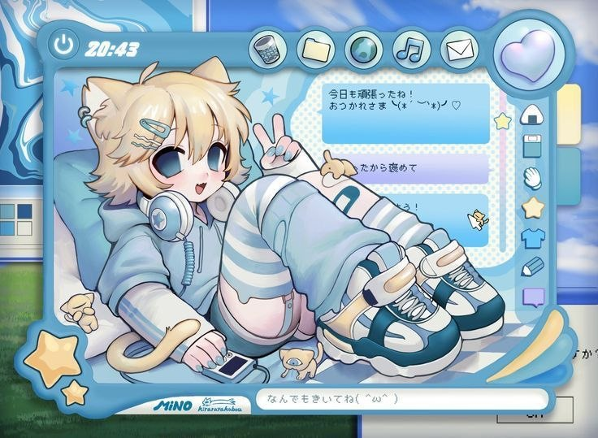

Фембої
Субкультура, стиль і право бути собою
Хто вони, звідки взялася ця субкультура - і чому розмова про неї насправді є розмовою про свободу, повагу та права людини.
Хто такі фембої
Фембой - це хлопець або чоловік, який поєднує у своєму стилі, вигляді чи манерах риси, які суспільство зазвичай вважає «жіночними»: колір, одяг, аксесуари, макіяж чи м'якшу манеру триматися.
Слово складається з fem (скорочення від feminine - «жіночний») і boy («хлопець»). Іноді пишуть femboi. Українською - «фембой», у множині «фембої».

Не плутаймо поняття
- Біологічна стать
- Фізичні ознаки, з якими людина народилася.
- Ґендерна ідентичність
- Внутрішнє відчуття себе хлопцем, дівчиною, обома чи жодним із цих варіантів.
- Ґендерне самовираження
- Те, як людина показує себе зовні: одяг, зачіска, макіяж, манера триматися. Саме про це - фембої
- Сексуальна орієнтація
- До кого людина відчуває романтичний чи емоційний потяг.
Ці чотири речі не обов'язково пов'язані між собою. Знаючи, як людина одягається, ми ще нічого не знаємо про її ідентичність чи орієнтацію.
Звідки це взялося
Слово «фембой» відносно нове, а от ідея, що чоловічий образ може бути м'яким, яскравим і декоративним, - дуже давня.
-
XVII–
XVIII століття, ЄвропаПідбори, перуки й мереживо - для чоловіків
При європейських дворах шовк, пудра, перуки та яскраві кольори вважалися чоловічою модою. Високі підбори взагалі з'явилися як взуття для верхової їзди й були популярні саме серед чоловіків. Тобто «жіночий» і «чоловічий» одяг - не вічні категорії: їх змінюють епохи.
-
1970-тіБританія та США
Глем-рок: андрогінність на сцені
Музиканти на кшталт Девіда Боуї й Марка Болана виходили на сцену в блискітках, з макіяжем і яскравими костюмами. Вони показали мільйонам людей, що чоловічий образ може бути ніжним, театральним і водночас упевненим.
-
1980–
2000-ті Японія та Корея«Гарні хлопці» в манзі та на сцені
У Японії популярні образи біщонен (bishōnen, «гарний хлопець») у манзі й аніме та естетика visual kei у музиці - з макіяжем і ефектними образами. У Кореї схожу естетику називають kkonminam - «хлопець-квітка». Ці культури вплинули на стиль, який сьогодні пов'язують із фембоями.
-
1990-ті –
2010-ті ІнтернетСлово з'являється й потрапляє в мережу
Слово femboy відоме щонайменше з 1990-х. З розвитком інтернету його підхоплюють форуми, імиджборди, Tumblr і Reddit - так формуються перші онлайн-спільноти. Точно визначити «момент народження» слова складно.
-
2020-тіСоцмережі
Естетика виходить у мейнстрим
TikTok, Discord, YouTube та ігрові спільноти роблять цей стиль помітним для мільйонів людей. Хештеги на кшталт #femboyfriday потрапляють у новини. Разом із популярністю зростають і дискусії про стереотипи, повагу та безпеку в мережі.
Стиль та естетика
Єдиного «дрес-коду» не існує. Ось мотиви, які трапляються найчастіше.
Кольори, які люблять найчастіше
- Лавандовий
- М'ятний
- Пудрово-рожевий
- Персиковий
- Лимонний
-
Одяг
Оверсайз-худі та светри, спідниці, шорти, високі шкарпетки, шарфи - зазвичай у м'яких, комфортних силуетах.
-
Аксесуари
Заколки, ланцюжки, чокери, браслети, значки та навушники - дрібні деталі, які додають характеру.
-
Догляд і макіяж
Догляд за шкірою, легкий макіяж або його відсутність - усе залежить від бажання та настрою.
-
Запозичення
Стиль черпає з аніме, K-pop, вінтажу, скейт-культури та естетики kawaii - з того, що подобається самій людині.
-
Манера
Хтось обирає м'якшу манеру говорити й рухатися, хтось - ні. Обов'язкових правил тут немає.
-
Вільний вибір
Для одних це стиль на щодень, для інших - гра зі своїм образом чи творчий проєкт. Це вибір, а не «уніформа».


Фембої не прікріплені до жодної певної групи або стилю.
Спільнота й інтернет
Сучасні субкультури формуються онлайн. Фембої - не виняток: пошук однодумців, обмін ідеями й мемами відбувається переважно в мережі.
Де зустрічаються спільноти
- TikTok
- Discord
- Tumblr
- YouTube
- Twitch

Що дає спільнота
- Підтримку й відчуття, що ти не один зі своїми інтересами.
- Обмін ідеями: стиль, ілюстрації, музика, мода.
- Творчість - від мемів і артів до відео та косплею.
На що звернути увагу
- Хейт і цькування в коментарях.
- Стереотипи в мемах: жарт легко переходить у приниження.
- Сексуалізація: слово «фембой» часто вживають і в дорослому контенті, що спотворює уявлення про тему. У нашому проєкті йдеться лише про стиль і самовираження.
- Безпека: не ділися особистими даними з незнайомцями; якщо хтось тисне чи пише неприємне - розкажи дорослому, якому довіряєш.
Міфи та факти
Натисни на твердження, щоб побачити, що з ним не так.
-
Факт
Ні. Стиль і сексуальна орієнтація - різні речі. Слово «фембой» не вказує на орієнтацію: такими можуть бути хлопці з будь-якою орієнтацією - або й без жодного «ярлика».
-
Факт
Не обов'язково. Багато фембоїв ідентифікують себе як хлопці й чоловіки та такими й залишаються. Ґендерна ідентичність - особиста тема, і її визначає сама людина, а не оточення.
-
Факт
Для когось це справді гра зі стилем або мем. Для когось - стала частина самовираження. Обидва варіанти мають право існувати, і жоден не дає підстав для образ.
-
Факт
Одяг, аксесуари чи макіяж не порушують чиїхось прав. Шкода виникає тоді, коли людину цькують і принижують за зовнішній вигляд, - тобто з боку тих, хто не поважає відмінностей.
-
Факт
Слово нове, а ідея - ні. Від європейських дворів XVII століття й глем-року до японської манґи чоловіки й раніше грали з «жіночими» елементами стилю.
-
Факт
Слово інколи вживають і в дорослому контексті, але воно не зводиться до цього. Для багатьох людей це про одяг, естетику й самовираження. Не варто судити про людину за мемами та чужими ярликами.
Громадянський погляд
Ми не зобов'язані любити чужий стиль. Але маємо поважати право людини бути собою - доки вона не порушує прав інших.
Що кажуть закони
Конституція України не згадує субкультури, але містить принципи, які стосуються кожного - незалежно від того, як він виглядає чи одягається.
Усі люди вільні й рівні у своїй гідності та правах; права людини невідчужувані й непорушні.
Для нашої теми: стиль людини не робить її «меншою» чи «гіршою».
Кожен має право на вільний розвиток своєї особистості, якщо цим не порушуються права й свободи інших людей.
Для нашої теми: обирати свій вигляд можна, доки це не шкодить іншим.
Громадяни рівні перед законом. Не може бути привілеїв чи обмежень за ознакою статі, переконань та іншими ознаками.
Для нашої теми: закон однаковий для всіх, незалежно від стилю.
Кожен має право на повагу до своєї гідності.
Для нашої теми: глузування та приниження - це неповага до гідності людини.
Це стислий переказ. Точні формулювання статей - у тексті Конституції України (посилання в розділі «Джерела»). Схожі ідеї закріплені й у Загальній декларації прав людини (1948).
Свобода однієї людини закінчується там, де починається свобода іншої.
Це і є межа, про яку йдеться в статті 23: свобода самовираження - не дозвіл ображати, і водночас чужа відмінність - не привід для образ.
Я маю право
- Обирати власний стиль і зовнішній вигляд.
- Не зазнавати приниження та глузувань.
- Мати власну думку про будь-яку субкультуру.
Я відповідаю за
- Свої слова й дії щодо інших людей.
- Те, що поширюю: образливі меми й чутки.
- Критику: обговорювати ідеї можна, принижувати людей - ні.
Толерантність - це не обов'язок погоджуватися чи наслідувати. Це готовність визнавати право іншої людини бути іншою.
Цькування (булінг)
Насмішки, образи, ізоляція, погрози чи приниження - зокрема в чатах і соцмережах - можуть бути булінгом. Через зовнішній вигляд і стиль цькують нерідко.
В Україні діє Закон № 2657-VIII від 18 грудня 2018 року, який зобов'язує заклади освіти реагувати на такі випадки та передбачає відповідальність за булінг.
- Не мовчи. Розкажи дорослому, якому довіряєш: класному керівнику, психологу, батькам.
- Не долучайся. Не смійся й не пересилай образливе.
- Підтримай. Напиши людині, яку цькують: вона не сама.
- Збережи докази. Скриншоти й дати допоможуть розібратися.
Національна дитяча «гаряча» лінія - безкоштовно й анонімно
116 111з мобільного, або 0 800 500 225
Питання для обговорення в класі
- Чи має школа право обмежувати стиль одягу учнів? Де межа між правилами й свободою самовираження?
- Чим відрізняється «мені це не подобається» від «це треба заборонити»?
- Як соцмережі впливають на стереотипи про субкультури?
- Що я можу зробити, якщо бачу, як когось цькують за зовнішній вигляд?
Висновки
Фембої - не «проблема» і не «діагноз», а одна з багатьох форм самовираження в сучасному суспільстві.
- Стиль, ґендерна ідентичність і сексуальна орієнтація - різні речі, і не варто їх плутати.
- Уявлення про «чоловіче» та «жіноче» в одязі змінюються з часом і залежать від культури.
- Повага до гідності іншої людини - основа громадянського суспільства.
Нам не обов'язково однаково одягатися. Але ми можемо однаково поважати одне одного.
Джерела
- Конституція Україниzakon.rada.gov.ua
- Закон № 2657-VIII «Про внесення змін до деяких законодавчих актів України щодо протидії булінгу (цькуванню)»zakon.rada.gov.ua
- Загальна декларація прав людиниzakon.rada.gov.ua
- Femboy — походження й значення словаdictionary.com
- FemboyВікіпедія (англ.)
- Glam rockВікіпедія (англ.)
- High-heeled shoeВікіпедія (англ.)
- Visual keiВікіпедія (англ.)
- BishōnenВікіпедія (англ.)
- Національна дитяча «гаряча» лінія - ГО «Ла Страда-Україна»la-strada.org.ua